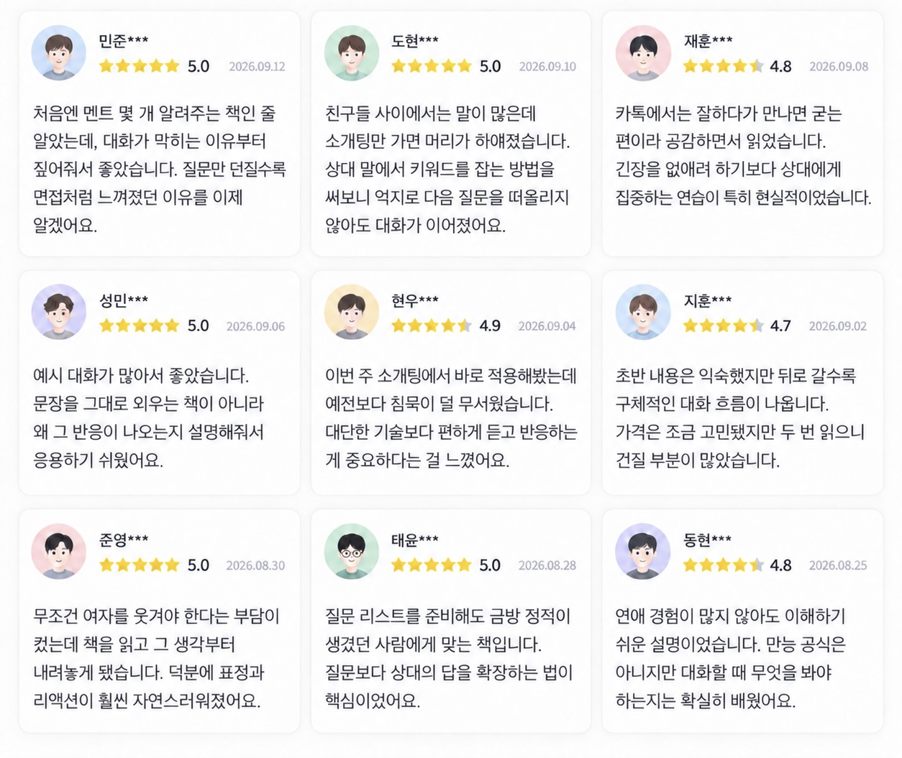

★ REAL REVIEWS
'노잼'을 벗은 사람들의
진짜 후기
저자의 이야기부터 실제 독자의 목소리까지

READERS' VOICES
이 페이지를 스크롤하는 지금도,
여자와 대화가 편해졌다는 후기는
매일 쌓이고 있습니다.
★ 실제 후기 모아보기

실제 구매자의 후기 스크린샷 · 개인정보는 가림 처리
"소개팅 멘트 100선 유튜브에 좌절했는데,
이 책은 방향이 다르네요."
그
그*****
실 사용 후기 · 5만원 미만
★★★★★
5.0
소개팅만 나가면 40분쯤에 정적이 와서
대화법 책과 유튜브를 정말 많이 찾아보고 매번 달라지겠다는 마음가짐으로 실천했었습니다.
하지만 번번이 실패해서 이 책도 그런 뻔한 내용은 아닐까 반신반의하며 구매했어요.
근데 읽을수록 다른 콘텐츠들과는 방향 자체가 다르다는 느낌을 받았어요. 멘트가 아니라 내 안의 재료부터 정리하게 만들어서, 다음 소개팅부터 확연히 편해졌습니다.
대화법 책과 유튜브를 정말 많이 찾아보고 매번 달라지겠다는 마음가짐으로 실천했었습니다.
하지만 번번이 실패해서 이 책도 그런 뻔한 내용은 아닐까 반신반의하며 구매했어요.
근데 읽을수록 다른 콘텐츠들과는 방향 자체가 다르다는 느낌을 받았어요. 멘트가 아니라 내 안의 재료부터 정리하게 만들어서, 다음 소개팅부터 확연히 편해졌습니다.
"상담·심리 상담도 해결 못한
이성 앞에서의 얼어붙음을 풀었어요."
건
건*****
실 사용 후기 · 5만원 미만
★★★★★
5.0
이성 앞에서 얼어붙는 문제로 상담 1년, 마음의 짐을 오래 들고 있었네요.
괜찮아질 듯 하면서도 소개팅만 나가면 다시 얼어붙어서 마음을 많이 내려놓은 상태였는데,
책을 보면서 깜짝 놀랐네요. 정확히 짚이지 않던 원인과 해결법까지 설명되어 있더라고요.
'아, 내가 재미없는 게 아니라 꺼낼 재료가 정리 안 된 거였구나.'
괜찮아질 듯 하면서도 소개팅만 나가면 다시 얼어붙어서 마음을 많이 내려놓은 상태였는데,
책을 보면서 깜짝 놀랐네요. 정확히 짚이지 않던 원인과 해결법까지 설명되어 있더라고요.
'아, 내가 재미없는 게 아니라 꺼낼 재료가 정리 안 된 거였구나.'
"멘트만 다루는 콘텐츠들 속에서
본질을 다루는 유일한 책입니다."
앤
앤*****
실 사용 후기 · 5만원 미만
★★★★★
5.0
구라 안 치고, 이 책 쓰신 분이랑 상황이 너무 비슷해서 순식간에 읽어 내려갔습니다.
전역 후 자신을 변화시키기 위해 유튜브·책으로 소개팅 스킬을 봐도 결론적으로 바뀌는 건 없었습니다.
오랜 시간이 흘러 이 전자책을 읽게 되었고, 다 읽고 난 후 '그래, 이거야'라는 생각이 들었어요.
특히 모닝페이지 부분에서 무릎을 쳤습니다. 왜 진작 이런 얘기를 아무도 안 해줬을까.
전역 후 자신을 변화시키기 위해 유튜브·책으로 소개팅 스킬을 봐도 결론적으로 바뀌는 건 없었습니다.
오랜 시간이 흘러 이 전자책을 읽게 되었고, 다 읽고 난 후 '그래, 이거야'라는 생각이 들었어요.
특히 모닝페이지 부분에서 무릎을 쳤습니다. 왜 진작 이런 얘기를 아무도 안 해줬을까.